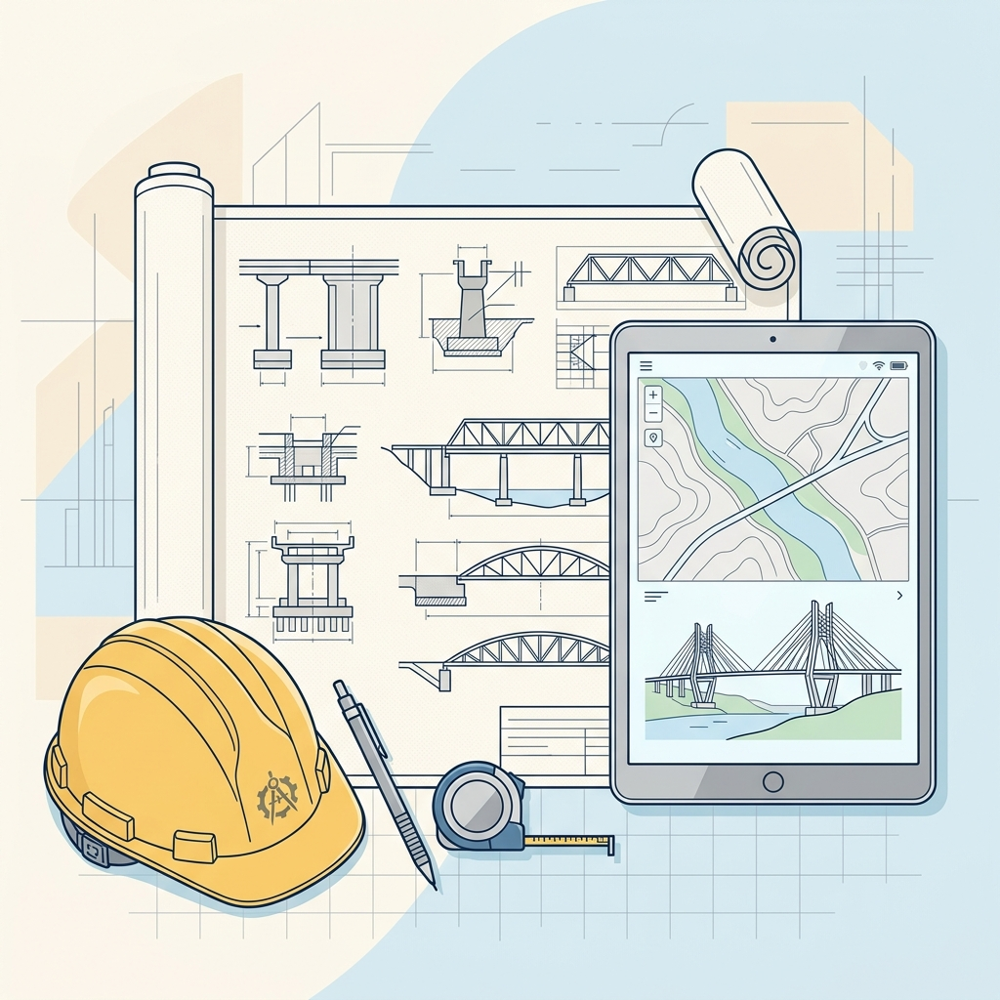

発注者が、「AIを使ってほしい」と言い始めました。 国交省は2026年度から、直轄の建設コンサルタント業務で、特記仕様書に「生成AIの積極的な利活用を推進する」と明記する方針です。ねらいは省力化だけでなく、技術者が本質的な検討に注力し、成果品の品質を上げること。「使っていいのか」は、もう問いではありません（2026年4月報道）。
建設業務のAI導入は、まず月3000円程度のAIチャットで十分です。
「AIなんて、うちにはまだ早い」——そう感じている建設・建設コンサルの会社こそ、今日から始められます。数百万円の専用システムを契約する前に、まず月3000円程度のAIチャット（ChatGPT・Gemini・Claude など。無料でも試せます）で、自社の仕事に本当に役立つかを自分の手で確かめる。その進め方を、実際に社内でAIを使い込んできた技術士がご案内します。
地元で踏ん張る中小の建設会社・建設コンサルタント（測量会社など近い業種の方にも）の力になりたくて、続けています。AIを知る側と知らない側の情報の差につけ込まれないように、数百万円の専用システムを構える前に、自分の手で確かめられる判断材料をお伝えします。
建設コンサルタント30年以上の現役技術士（建設部門）｜国土交通省 地方整備局長表彰・学会論文発表あり｜身近なAIで社内の“専用AI”を自作した実務者

あなたはどれ？ 立場でわかる、3つの入口
立場が違えば、知りたいことも違います。3つの中から近いものを選んでください。
国の動き——今、始める理由
建設関係の生成AI導入、正しい道筋は6つのステップです
大手ベンダーの高い専用AIを入れなくても、ここから始められます。ツールの名前を覚える必要はありません。順番さえ守れば、遠回りせず着実に進められます。あなたの会社が今どこにいるかを探しながら、読み進めてください。
ここまでお金はかかりません
Step0 触るAIチャットで間違えても、何も壊れません。
今日の一歩：スマートフォンの無料AIアプリに「今晩の献立を考えて」と話しかける（5分）。
本当に壊れないの？→ 構造計算ソフトとの違いを見る（入門ページへ）
Step1 守る会社で使う前に、どのデータを入れてよいかを決める。核心はここだけです。
今日の一歩：どのAIに、どのデータを入れてよいかを、1枚の表で確かめる（10分）。
止めるのは→ 人の名前がわかるものとまだ公表されていない金額だけ。どのAIに、どのデータを入れてよいかを見る
Step2 試す無料のAIを、自分の仕事1つに使ってみる。頼み方と確かめ方に、少しだけコツがあります。
今日の一歩：議事録のたたき台を1本AIに頼む（コピペで試せる5分の実演へ）。最後に「不足する情報は私に質問してください」と一言添える。
AIの答えは信じていいの？→ 確かめるのは3つだけ（手順記事へ）
Step3 広める広めるのは研修ではなく、「隣の人の5分」。使う人がひとり増えるたび、会社は変わり始めます。
今日の一歩：自分がラクになった使い方を、隣の席の人にひとつ見せる。
なぜ研修では広まらないのか？→ 広めた手順の実体験を読む
ここからが判断です
Step4 払う払うのは「使う人の分だけ」——目安は1人あたり月3000円程度。数百万円の契約は、1人分で試してからで十分です。
今日の一歩：手元のベンダー見積書を、契約前に確かめる3つの事実と並べて読む。
月いくらが妥当？→ 3段階の費用の目安を見る（経営者ページへ）
Step5 応える発注者は、AIの活用を求め始めました。ここまでの5ステップが、そのまま備えになります。
今日の一歩：国の動き（特記仕様書に生成AIの積極的な活用が明記される流れ）を、国交省の方針の記事で5分で知る。
会計検査で「誰もわかりません」をなくすには？→ AIを業務の専門家に育てる話へ
順番さえ守れば、大きく道を外すことはありません。
まず試すなら、どのツールから？ 30秒で選ぶ
高いAIシステムを契約する前に、ちょっと待ってください
数百万円の専用システムを入れる前に、まず月3000円程度のAIで足りるかを確かめる。その判断材料を、実務目線で整理して発信しています。
人手不足と高齢化が進むいま、中小の建設会社や建設コンサルタント（測量会社なども同じです）ほど厳しい状況に置かれています。それでもAIを使いこなして生産性を上げ、生き残ってほしい——それが、この発信を続けている理由です。AIを知る側が知らない側につけ込んで、必要以上に高い契約を結ばせる。そんな情報の格差をなくしたいという思いも込めています。
現役・建設部門の技術士
civilAI（技術士）
建設コンサルタント業界で30年以上、建設現場の管理も3年以上たずさわってきた現役の技術者です。国土交通省 地方整備局長からの表彰をはじめ複数の表彰の受賞歴があり、土木学会・砂防学会での複数の論文発表、ドローンなど新技術に関する論文発表の実績もあります。日々の業務で生成AIを使い込み、社内資料の検索・作成を効率化するAIの仕組みを自作してきました。建設・建設コンサルの実務者が「専用システム」の契約で迷わないよう、実務目線で判断材料を発信しています。
★技術士（建設部門）
✓コンクリート診断士
✓1級土木施工管理技士
★国土交通省 地方整備局長表彰
✓土木学会・砂防学会で論文発表（複数）
✓ドローン等 新技術の論文発表（複数）
いま無料でも試せるAIで、かなりのことができます。
それを知らずに数百万円の契約をしてしまうと、もったいない。だから「先に、月3000円程度のAIで確かめませんか」——それが、このサイトの役目です。
あわせて、機密の守り方（入れないのは発注者名・現場の住所・個人情報・契約金額の4つだけ）と、AIの答えを元の資料で確かめる習慣まで、実務目線でご案内します。
お問い合わせ
記事へのご質問、執筆・研修等のご相談はこちら。
お知らせ・更新情報
civilAI（技術士）の最新アップデート情報をお届けします。
「建設会社のAI導入が失敗する理由｜高い契約の前に知る4パターン」を公開しました。
「地方・中小の建設会社の生成AI事例｜10名でも始められる」を公開しました。
「その"建設特化AI"、契約前に確かめる3つの事実｜技術士」を公開しました。